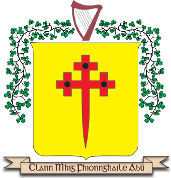
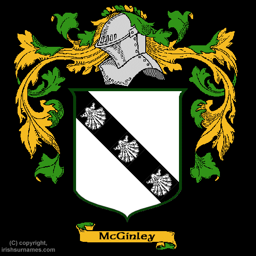
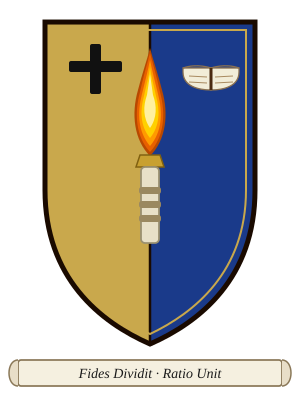

A survey of heraldic traditions associated with the McGinley name
MagFhionnghaile · County Donegal · Ireland
Unlike the centralised heraldic systems of England or Scotland, Irish clan identity was expressed through banners and battle standards long before the Norman concept of the shield-borne coat of arms arrived. The McGinley name — MagFhionnghaile in Irish, "of the fair-valoured" — is ancient to County Donegal. Several distinct heraldic traditions have been recorded in connection with the name; three are presented here.

See also: mcginleyclan.org →
See also: IrishSurnames.com →
See also: mcginley.online →The three variants side by side.
| Arms | Key Charges | Motto / Cry | Source |
|---|---|---|---|
| The McGinley Clan | Or field; cross crosslet fitchy Gules; black roundels at crosslet tips; harp crest | Clann Mhig Fhionnghaile Abú
("Clan McGinley forever" — war cry) |
mcginleyclan.org |
| Irish Surnames Gallery | Argent field; a bend Sable charged with three escallops Argent; helm crest | None recorded | irishsurnames.com |
| McGinley Family Arms | Per pale Or & Azure; torch Or overall; cross Sable; book Argent | Fides Dividit, Ratio Unit
("Faith divides, Reason unites" — Latin) |
mcginley.online |